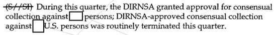
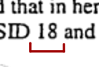
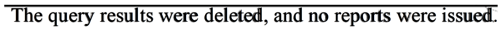
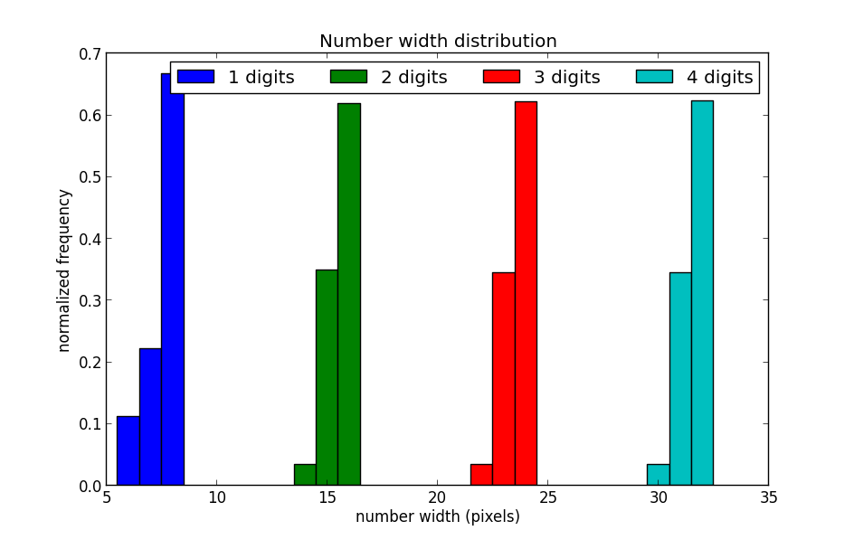

How to (partially) declassify NSA documents
The day before Christmas Eve, the (American) NSA published a bunch of declassified reports that have been handed to the President's Intelligence Oversight Board (IOD) for the past 10 years or so. I quickly scrolled through a couple of documents to find a lot of heavily redacted text:

The idea
What struck me was that what most of the redacted text that I think the public (and me) are interested in is the magnitude of NSA surveillance, namely how large the redacted numbers are. I started asking myself, can the space that the redacted numbers take up on a document tell us anything about what's redacted behind the white boxes? I think the answer is fairly obvious - yes - the number “1000000” definitely does not fit into most boxes, so we can conclude that targetted surveillance is less than that. But can we do better?
Before we dig further - how to we know that the content underneath the redaction boxes are similarly sized as the numbers they redact? We don't. However, we can always be certain of the width of the number plus the space to the left and right of it (since it's visible):

In the NSA case, we also know that
- they are not using justified alignments. This would make spacing less deterministic.
- they don't seem to manually add spacing (or zero pad) around their non-redacted numbers.
In information theory Shannon introduced the concept of entropy as a measure of information. In layman's terms, the more similar data is, the less information is contains. If we make an analogy to the number width problem, we are hoping that different numbers in whatever font the NSA is using should have as unique width as possible.
For non-monospaced fonts, there is the chance of digits being different in size. Further, there is also a chance that they have different kerning, which could make number width signatures even more unique.
The font
By the way, which font are NSA they using? I gave WhatTheFont a try and it hinted that the NSA is using any of the following fonts:
- Esperanto Condensed Bold
- URW Garamonds ExtraNarrow Medium
- Aragon Condensed
- Printed Claude.
- FF Seria Sans Pro Bold Italic
Looking at those fonts, the only one the it could potentially be would be Garamond, which is a fairly popular font. That said, when overlaying it with NSA text it didn't match too well. However, a simple guess that the NSA was using the good ‘ole Times New Roman looked like a better match:

The reason it does not match fully is due to a slight different kerning. A quick Googling brought me to this bug report (are NSA using LibreOffice?). Looks like I was not using the exact font (or rendered) match.
Test implementation
To test my theory I wrote a small Python script to generate histograms of the width of numbers. It uses ImageMagick to generate test images, crop and output the width of the images.
Output for “Times New Roman” with size 16px:

Output for “Times New Roman” with size 30px:
Result
Sadly, the results show that different numbers yield fairly similar width. It also looks like different font sizes didn't make any significant difference in length signature.
That said, the number of digits yields a unique width so we can definitely know the magnitude of the redacted numbers, ie. whether they are 10s, 100s or 1000s etc.
Discussion
ImageMagick uses the freetype library for font rendering. freetype has support for kerning, but kerning could definitely differ in implementation. I had a quick look at scripting MS Word, but it looked like too much of a hazzle for such a short experiment. Especially on MaxOSX. LibreOffice has slightly better scripting support. Scripting a fully featured word processor is definitely a future possible experiment/improvement.
The font I am using is the “Times new roman” font that comes with MacOSX. MS Office ships with its own which could have different kerning and/or different digit widths. This would probably yield a different result from mine.
For people who are planning to do safe redaction of text in documents, think about the following:
- Use a font with preferably no kerning. Monospaced font will do.
- Use font with same-width digits. Monospaced font will do.
- To avoid leaking magnitude of numbers, pad all numbers with fixed, or random, spaces.
That said, it would be a fun thought experiment if NSA, or other intelligence organizations, would infiltrate (Times New Roman) typesetters to create unique kerning for letter constellations. It could make it much easier to work around redacted text in declassified documents from around the world. Call it a typography backdoor if you will.
Conclusion
This little experiment tested and showed that it's possible to extract the magnitude in the redacted numbers in declassified (NSA) documents. It could not show that digit width or kerning could help in determining the numbers more specifically. However, there is definitely future improvements.
If you are curious about the magnitude of the redacted NSA numbers, consider them leaked. I'll let someone else do the hard work of extracting them ;-).